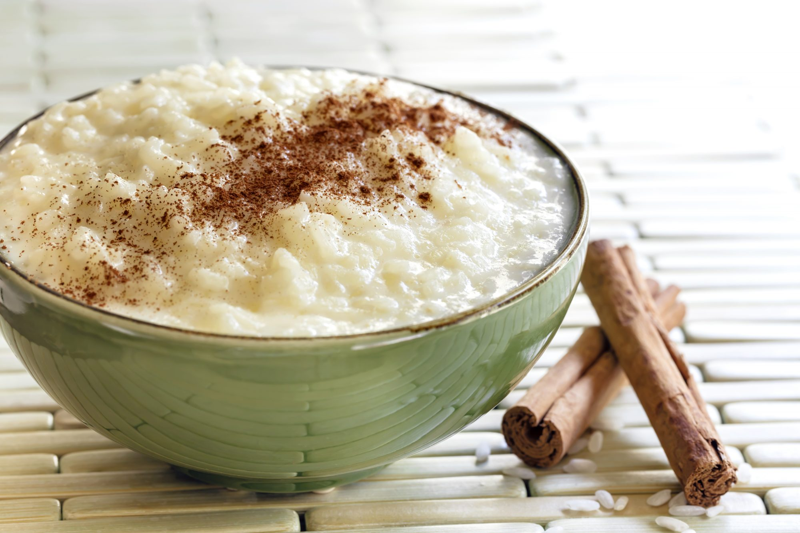

Arroz con leche

A perfectly creamy and sweet dessert
Arroz con leche is one of the most popular desserts in latin America.
Enjoyed by many families, including mine, around the world, this dessert is versatile and easy to make
Ingredients
- The milks: This recipe is made with different types of milk:
sweet condensed milk (lechera), evaporated milk and 2% or whole milk. The combination
of 3 mils is the secret to super creamy Arroz con leche!
- The rice: Regular long grain & jasmine rice work best for Mexican rice pudding.
Basmati may be used if that’s all you have but note that it may transfer some of the classic
basmati fragrance into the rice.
- The cinnamon: Cinnamon sticks are best as they release a stronger taste but in a pinch,
you can add 1 teaspoon of ground cinnamon
- Lime peel: Why use lime peel? It balances all of the sweet flavors. I truly recommend it!
- The raisins: This is a standard ingredient in Mexican Arroz Con Leche but you can skip it
if you don’t like them. Hey, I do since my hubby doesn’t like them?
Instructions
- In a medium saucepan add the condensed milk, evaporated milk and whole milk. Keep warm over low heat.
- In a separate large saucepan, add the 3 cups of water, salt, lime peel, and cinnamon sticks. Bring to
a boil for a couple of minutes.
- Add the rice and reduce the heat to medium-low and cook uncovered, stirring once or twice.
Cook for 15 minutes.
- Add the warm milk mixture over the rice & raisins, stir, and reduce the heat to low. Cook for
about 30 minutes more stirring occasionally. Keep an eye on it to make sure the rice doesn’t flow over.
…I cannot stress this part enough!
- Turn off the heat and remove the cinnamon sticks & lime peel. Let it cool slightly for about
30 minutes
Return to top
Return to main page